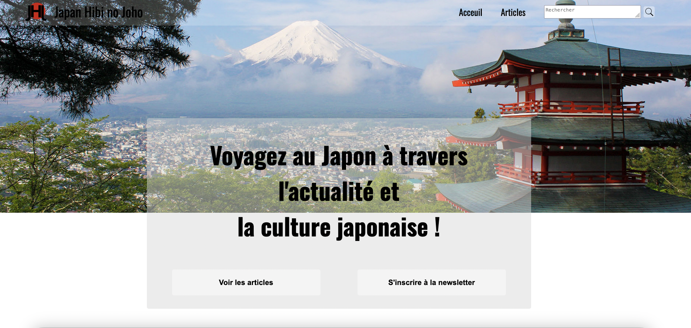
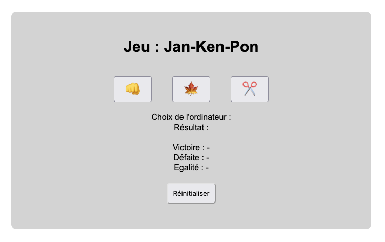

Mes projets

Japan Hibi no Joho
Mon premier site créé de A à Z. Japan Hibi no Joho est un site d'actualités japonaises.
Le nom de ce site signifie "les actualités journalières du Japon".


Jan Ken Pon
Mon premier site créé avec du Javascript.
Jan Ken Pon est le jeu pierre-feuille-ciseaux japonais.
Sur ce site vous jouez contre l'ordinateur.